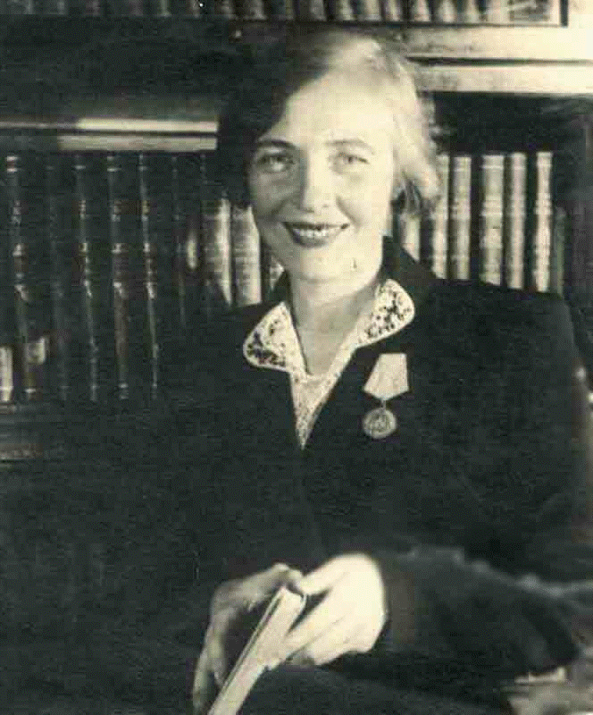

Берггольц Ольга Федоровна (1910-1975)
Берггольц Ольга Федоровна (1910-1975) — Русская советская поэтесса, прозаик, драматург, журналист и член Союза писателей СССР. Лауреат Сталинской премии, кавалер орденов Ленина и Трудового Красного Знамени. Литературой Ольга Фёдоровна увлекаться стала еще в довоенное время. Её первое стихотворение «Ленин» и рассказ «Заколдованная тропинка» (1925г.) написаны еще в юном возрасте, а через год выпускница печатает в «Ленинской искре» новые стихи «Песня о знамени»

В годы Великой Отечественной войны Ольга Берггольц оставалась в осаждённом Ленинграде. С августа 1941 работала на радио. Любовь к Родине и способность заслонить другого, помогло Ольге выжить и выстоять.Пережив блокаду Ленинграда, Берггольц посвятила героической обороне города произведения «Февральский дневник», «Ленинградская поэма» (1942), «Ленинградская тетрадь» (1942; сборник), «Памяти защитников» (1944), пьесу «Они жили в Ленинграде» (написана совместно с Георгием Макогоненко в 1944 году и поставлена в театре Александра Таирова), «Твой путь» (1945), киносценарий «Ленинградская симфония» (1945; совместно с Макогоненко), пьеса «У нас на земле» (1947). 3 июня 1942 года Ольге Берггольц вручили медаль «За оборону Ленинграда» и медаль «За доблестный труд в Великой Отечественной войне 1941—1945 гг.».